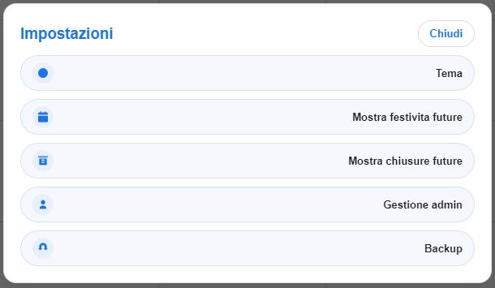

Impostazioni
L'ingranaggio raccoglie preferenze visive, elenchi calendario e strumenti amministrativi. La disponibilità delle voci dipende dalla sessione e dalla Configurazione accessi.
| Voce | Funzione |
|---|---|
| Tema | Light, Dark o AyPi; Salva applica la scelta, Ripristina default torna al tema standard. |
| Mostra festività future | Elenca festività registrate e consente di individuare rapidamente una data. |
| Mostra chiusure future | Elenca intervalli di chiusura aziendale futuri. |
| Gestione Admin | Anagrafiche admin, password e configurazioni sensibili. |
| Configurazione accessi | Decide quali tipi e azioni richiedono autenticazione e quali operazioni sono permesse. |
| Analisi assenze | Apre dashboard con KPI, grafici e tabelle filtrabili. |
| Backup | Crea o ripristina lo stato Calendar condiviso. |
Procedura consigliata
- Accedi come admin prima di aprire una funzione sensibile.
- Modifica una sola area alla volta.
- Premi il pulsante Salva della finestra specifica.
- Chiudi e premi Aggiorna per verificare l'effetto.
Solo Admin
Configurazione, Gestione Admin e Backup richiedono autorizzazione admin. I permessi possono rendere amministrative anche altre azioni.
Note
- Il tema è una preferenza visiva; festività, chiusure, accessi e backup sono dati condivisi.
- Prima di ripristinare un backup o cambiare permessi, avvisa gli operatori collegati.
